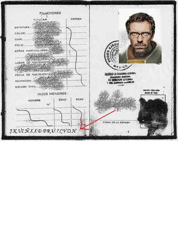
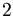

Justicia
 De: La Frikipedia, la enciclopedia extremadamente seria.
De: La Frikipedia, la enciclopedia extremadamente seria.

|
La información contenida en este artículo es una mínima parte de su jugo total, así que ponte los guantes, saca el tupperwere y empieza a exprimir el tema. Si lo haces serás recompensado con una galleta en almíbar y algo más.
|
JUSTICIA (del griego justizios, y del latín alea jacta est) es una palabra inexistente en el español, traída de otras lenguas de países más honestos, como por ejemplo, Narnia y Abu Simbel, y que evoca una entidad irreal, abstracta e inexistente en nuestro país. La justicia, en términos técnicos, viene a ser ser justo. Normalmente el término justicia se utiliza en el ámbito judicial. El ámbito judicial se dedica a procurar que las cosas sean justas. Pero para que las cosas sean justas, ha de haber Justicia. Y la Justicia, está secuestrada por las leyes. Supongo que ha quedado claro.
¿Y eso de "inexistente en nuestro país"?
Pues viene a significar que esto está lleno de España. Las últimas encuestas del J.K.UI.Ñ.X.X.D.F.R.U.7.CV.キ.H dicen que en Espiña, la justicia está presente en el 0,000000000000000000000000000000000913% de las transaciones ecónomicas y demás paparruchas que dependan de la honestidad de una persona española. Así queda aclarado el punto que afirma que AQUÍ NO EXISTE LA JUSTIZCIA.
¿Qué entidad es el J.K.UI.Ñ.X.X.D.F.R.U.7.CV.キ.H?
Necesitas ser de nivel 42 y tener casa en la Sierra para acceder a estos datos.  Pasaporte ultrasecreto de un miembro del J.K.UI.Ñ.X.X.D.F.R.U.7.CV.キ.H, cuyas credenciales han sido eliminadas con un potentísimo programa de retoque fotográfico.
Requisitos y pasos (en orden) para administrar justicia en Espiña
- Estar vivo
- Sacar la E.S.O.
- Nacer
- Sacar el bachiller
- Sacar la selectividad
- Saber hacer chuletas para los anteriores 3 pasos.
- Estudiar una carrera cualquiera (no tiene por qué ser Derecho, puedes estudiarla tumbado)
- Tras sacarse la carrera (la que sea), ir a cualquier bufete de jueces y QUE TE CONTRATEN (este es paso más difícil de todos, lo demás está todo chupao).
- Ya está. Ahora, no tienes más que ponerte una peluca blanca con rulos al estilo Luis XVI (sustraíble perfectamente a tu abuela), una sotana e ir a los juicios que te toque. Puedes decir lo que te dé la gana, que nadie te va a decir nada, por muy estúpido que sea (incluso si le das la razón a un político, sí; increíble que te crean, ¿eh?).
Así, podrás seguir con tu vida de hurtos, robos y atracos en tu tiempo libre, mientras que "administras justicia" cuando "trabajas". ¡Y luego dicen que trabajar es aburrido!
Cifras y datos de intéres
- Los jueces ganan 100 veces las rupias que cobras tu al año... ¡en un mes!

Está todo pensado: en tu estrado tienes un martillito para diversos usos vitales: cascar nueces, hacer ejercicio, practicar carpintería, cascar cabezas, cascar huevos, cascar dinamita, levantar la sesión...
- La relación trabajo-sueldo neto ganado en el caso de un malvado juez es de 8000000000088888080808:1, mientras que la de un trabajador honrado es de -235:1.
- La peluca antigua de un juez le proporciona una protección solar del 300, y además funciona como un chakra defensivo, otorgándole +35 de armadura contra goblins.
- El cometa Halley pasa cada 76 años cerca de la tierra, y, aunque en España sólo llueve una vez cada 900 años, cuando pasa este cometa, una borrasca de 700 milibares se sitúa en la península por 3 días, dejando precipitaciones de hasta 700 l/m2 (excepto en Almería, donde sólo se nubla).
- En España no hay de eso, y sino mirar a Urdangarin
Enlaces
Autor(es):
- Roms
- Frikedu92
- Barsinson
- Genericool
- PEPEMANOLONEWS
- Thenacholol
- Thelordg95
Frikipedia 2005-2016, Licencia
GFDL 1.2 - Extraído por FrikiLeaks